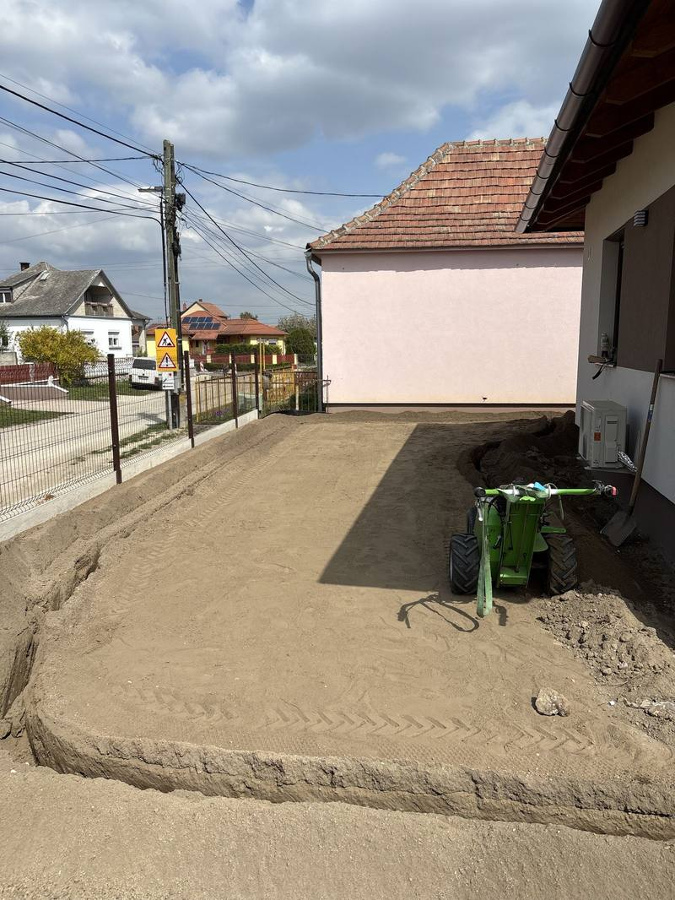
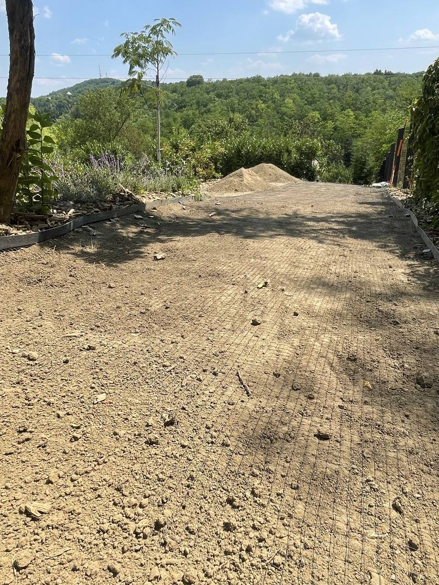
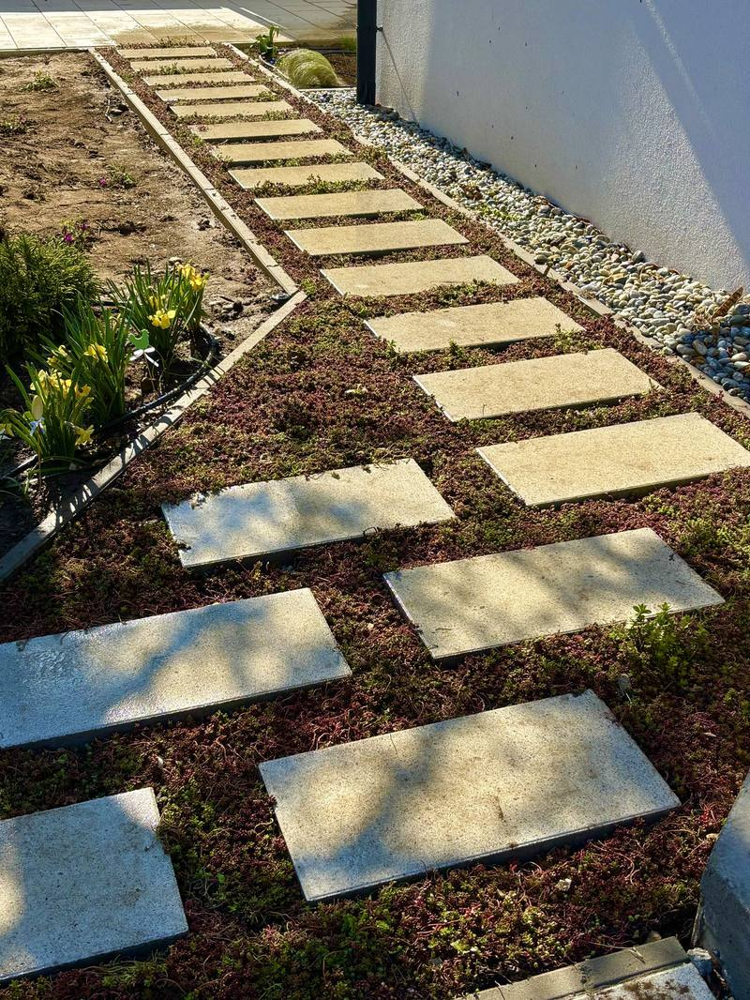

Garden construction in Győr, from the earthworks to the last plant.
Out of an empty plot, a yard left behind by the builders or an old neglected garden, we build a complete, usable green space: earthworks, turfing, planting, paving and garden structures — from one team, to one coordinated plan.

From the ground levels through the paving to the choice of planting, every element rests on the one before it. Planned and built in one pair of hands, the result comes together — instead of a half-finished yard assembled out of unrelated parts.
A good garden is not an accident.
Rapidkert takes on turnkey garden construction in Győr and the surrounding villages. Out of an empty plot, a yard left behind by the builders or an old, neglected garden, we build a complete and usable green space.
soil Filling or cutting, levelling, and preparing the soil. A good garden starts under the ground: without ordered levels and a sound soil structure, nothing stays looking good for long.
paths Block paving, slabs, gravel beds, stepping stones — for terraces, driveways and garden paths. On a stable base and with careful falls, so the paving does not settle and water does not stand on it.
structures Retaining walls, bed edging, fencing, pergolas and decorative surfaces. The elements that give the garden its structure, frame the planting and make the space usable.
lighting Under the finished garden we can build in an automatic irrigation system and garden lighting — so the planting keeps itself, and the garden is still there after dark.
Garden planning — see the garden before it is built
We always start with a plan. After the site consultation we set out the garden's layout: where the functions, the paving, the planting zones and the main features go. You see the result before a spade goes into the ground — and you don't find out halfway through that something doesn't fit or doesn't work. We plan the garden around how you live: how much you want to look after, how you would use it, what you like.
Under the finished surface there is a build-up.
What you see
Mown lawn, a level terrace, a path, a bed. One flat surface, with nothing on it to say how much work is underneath.
- 01 Lawn, ground cover
- 02 Block paving, slabs
- 03 Beds, mulch
- 04 Edging, bed frames
What makes it last
- 01 Levelling and drainage
- 02 Compacted sub-base
- 03 Crushed-stone bedding under the paving
- 04 Topsoil under the lawn and the planting
- 05 Edging between the two systems
Paving stays level and sheds water if the bedding and the falls are right. A lawn comes up even if there is enough topsoil under it. Neither of those is visible — and they decide everything.
Not a render — a built garden.



The details decide whether a garden comes together.
Rapidkert — constructionOne team, one responsibility.
You don't have to coordinate a separate planner, gardener and paving contractor. One team answers for the result, and we warrant it.
Free consultation
We look at the ground, the orientation and the soil, and talk through how you would use the garden — how much lawn, how much paving, what kind of feel.
Layout and concept
We set out the garden's layout: where the functions, the paving, the planting zones and the main features go.
Earthworks and soil
Grading, levelling, replacing or improving the soil, the foundations for the paving, and forming the drainage.
Building it
Paving, garden structures, planting and turfing — to the plan, in a coordinated sequence. Irrigation goes in at this stage too, if you want it.
Handover and care
We hand over the finished garden and tell you how to keep it that way. Ongoing garden care is available if you want it.
From an empty plot to a garden rebuilt.
new houses Out of the compacted, unformed ground the builders leave behind we build a complete garden: earthworks, lawn, planting, terrace and driveway — to one coordinated plan, so the green space actually belongs to the new house.
old garden Tired lawn, overgrown beds, dated paving — we rethink and refresh the garden you have. What is worth keeping stays; the rest is replaced with something current and easier to look after.
commercial grounds Shared gardens, company yards, the green space in front of a shop. Built to take use, to look good and to stay maintainable — well-kept grounds raise the value of the property and of the business on it.
front gardens A well-planned small garden is worth more than a badly used large one. Narrow front gardens and inner courtyards can be made into places worth being in, using every square metre.
Free site consultation · Itemised, transparent quote · Fixed price, no hidden costs.
What does garden construction cost in Győr?
The price of a garden depends on its size, the ground conditions, how much paving there is and the choice of planting — which is why we don't work from a price list. After the free consultation you get a specific, itemised quote showing what each part costs.
Where we take on work
We take on garden construction and garden planning in Győr and the surrounding villages: Győrújbarát, Győrújfalu, Abda, Nyúl, Écs, Pannonhalma, Töltéstava, Kisbajcs, Vámosszabadi, Gyirmót and Ménfőcsanak. For larger projects we also travel out towards Mosonmagyaróvár, Csorna, Kapuvár and Pápa. If your town is not on the list, call us — we can probably work something out.
Not the answer you needed? Call us.
01 Will you start without a plan, or does a layout come first?
We always start with a plan. After the consultation we set out the garden's layout — where the functions, the paving and the planting zones go — so you can see the result before construction starts and decide without pressure. That way you don't find out halfway through that something doesn't fit or doesn't work.
02 Do you renovate existing gardens, or only build from scratch?
Both. We build complete gardens from scratch around new houses, and we also renovate gardens that have got tired, overgrown or dated. In that case we work out what is worth keeping, and what is worth replacing with something current and easier to look after.
03 How long does it take to build a garden?
It depends on the size and the complexity: a small front garden is a few days, while a complete large garden with paving and structures can run to several weeks. We give a realistic schedule at the planning stage and we keep to it — the exact timing is set out in the quote.
04 When is the best time to build a garden?
Earthworks, paving and garden structures can be done almost all year round. Planting and turfing are best in spring and early autumn, though with irrigation and a careful choice of species a good result is possible at other times too.
05 Do you look after the finished garden as well?
Yes. After handover we take on ongoing garden care if you want it — mowing, pruning, bed maintenance, seasonal work. So keeping the garden looking good in years to come doesn't depend on you assembling the tools and the know-how yourself.
06 Is there a warranty on the work?
Yes. Because the plan and the whole build are ours, we warrant our own work, and we stay reachable after handover. The specific conditions — for the paving, the garden structures and the planting — are set out in the quote.
Our other services
08 — Let's start
Your plot could become the best garden on the street.
Book a free site consultation in Győr or the surrounding area. We look at the ground, listen to what you want, and show you what can be made of it — with no obligation.